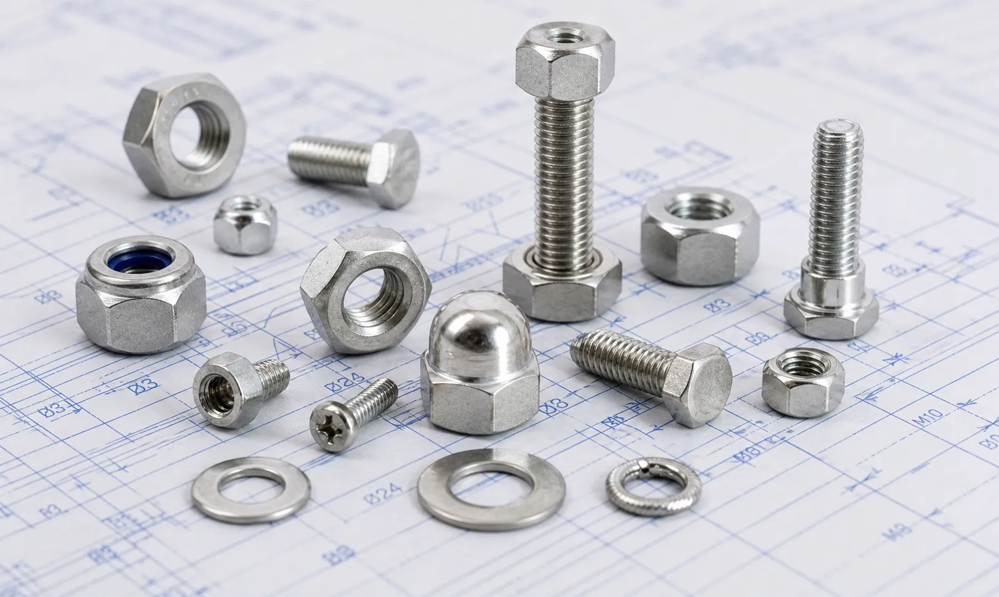

15-5 PH Stainless Steel Fasteners including bolts, nuts, stud bolts, washers, and anchor bolts for aerospace, power generation, petrochemical, marine engineering, and heavy machinery applications.
15-5 PH Stainless Steel Fasteners are high-strength precipitation-hardening stainless steel fasteners developed for applications requiring superior mechanical properties, toughness, and corrosion resistance. Known for their excellent combination of strength and reliability, these fasteners are widely used in aerospace, power generation, petrochemical, and engineering industries where performance under demanding conditions is essential. Gururaj Infradesigns is a trusted 15-5 PH Stainless Steel Fasteners Manufacturer in India, supplying precision-engineered fastening solutions for critical industrial applications.
Our product range includes hex bolts, stud bolts, anchor bolts, U bolts, hex nuts, washers, and socket head bolts manufactured in accordance with international quality standards and industrial specifications.

15-5 PH Stainless Steel is a precipitation-hardening martensitic stainless steel grade that offers improved toughness and transverse mechanical properties compared to 17-4 PH stainless steel. The material achieves excellent strength through heat treatment while maintaining good corrosion resistance in a wide range of industrial environments.
As a specialized grade within the broader range of Stainless Steel Fasteners, 15-5 PH Fasteners are commonly specified for high-performance applications where strength, durability, and dimensional stability are critical factors.
| Property | Details |
|---|---|
| Product | 15-5 PH Stainless Steel Fasteners |
| Grade | ASTM A564 Type XM-12 / UNS S15500 |
| Product Types | Hex Bolts, Stud Bolts, Anchor Bolts, U Bolts, Hex Nuts, Washers, Socket Head Bolts |
| Standards | ASTM, ASME, DIN, ISO |
| Sizes | M3 to M100 and Custom Sizes |
| Thread Type | Metric, UNC, UNF, BSW |
| Forms | Bolts, Nuts, Studs, Washers |
| Heat Treatment | H900, H1025, H1075, H1150 |
| Certification | Mill Test Certificates Available |
Our range includes hex bolts, socket head bolts, and U bolts manufactured for applications requiring high strength, dimensional stability, and reliable performance. These bolts are widely used in aerospace, power generation, and heavy engineering assemblies where mechanical integrity is critical.
We supply precision-engineered hex nuts designed to provide secure fastening under demanding operating conditions. Their excellent strength and corrosion resistance make them suitable for critical equipment, structural assemblies, and industrial machinery.
15-5 PH stud bolts are commonly used in pressure-containing equipment, flanged connections, and heavy-duty industrial applications. Their high tensile strength and toughness help maintain joint integrity in demanding service environments.
Our anchor bolts and washers are manufactured to support heavy equipment installations, structural foundations, and industrial infrastructure projects. They provide reliable load distribution, secure fastening, and long-term performance in challenging operating conditions.
15-5 PH Stainless Steel Fasteners provide outstanding tensile and yield strength, making them suitable for critical fastening applications subjected to heavy loads and demanding operating conditions.
Compared to many precipitation-hardening stainless steels, 15-5 PH offers excellent toughness and impact resistance, helping improve reliability in dynamic service environments.
The material provides dependable resistance to atmospheric corrosion, industrial environments, and mild chemical exposure while maintaining excellent mechanical performance.
Heat treatment can be performed with minimal distortion, allowing the fasteners to maintain dimensional accuracy and consistent performance in precision assemblies.
The combination of strength, toughness, and corrosion resistance contributes to extended service life and reduced maintenance requirements.
| Element | Percentage (%) |
|---|---|
| Chromium | 14.0 – 15.5 |
| Nickel | 3.5 – 5.5 |
| Copper | 2.5 – 4.5 |
| Manganese | Max 1.0 |
| Silicon | Max 1.0 |
| Carbon | Max 0.07 |
| Phosphorus | Max 0.04 |
| Sulfur | Max 0.03 |
| Niobium + Tantalum | 0.15 – 0.45 |
| Property | Typical Value |
|---|---|
| Tensile Strength | Up to 1310 MPa |
| Yield Strength | Up to 1170 MPa |
| Elongation | 10 – 15% |
| Hardness | Up to 44 HRC |
| Density | 7.78 g/cm³ |
15-5 PH Stainless Steel Fasteners are extensively used in aircraft structures, aerospace assemblies, landing systems, and critical components requiring high strength and reliability under demanding operating conditions.
Power plants utilize these fasteners in turbines, generators, compressors, and structural systems where mechanical strength and dimensional stability are essential.
The material is widely used in valves, pumps, pressure-containing equipment, and industrial processing systems exposed to challenging operating environments.
Good corrosion resistance combined with excellent mechanical properties makes these fasteners suitable for marine hardware, offshore equipment, and coastal installations.
Heavy engineering equipment and manufacturing machinery frequently utilize 15-5 PH fasteners in applications subjected to vibration, cyclic loading, and repetitive stress.
| Property | 15-5 PH Stainless Steel | 17-4 PH Stainless Steel |
|---|---|---|
| Grade | UNS S15500 | UNS S17400 |
| Strength | Excellent | Excellent |
| Toughness | Higher | Good |
| Corrosion Resistance | Good | Good |
| Dimensional Stability | Excellent | Excellent |
| Heat Treatability | Yes | Yes |
| Typical Applications | Aerospace, Power Generation | Aerospace, Petrochemical, Marine |
Both 15-5 PH and 17-4 PH Stainless Steel Fasteners offer an excellent combination of strength, corrosion resistance, and heat-treatable properties. While 17-4 PH Stainless Steel Fasteners are one of the most widely used precipitation-hardening stainless steel grades, 15-5 PH is often selected for applications requiring improved toughness, better transverse mechanical properties, and enhanced reliability in critical aerospace and engineering components.
| Industry | Reason for Selection |
|---|---|
| Aerospace | High strength and toughness |
| Power Generation | Mechanical reliability |
| Petrochemical | Strength and durability |
| Marine Engineering | Corrosion resistance |
| Heavy Machinery | Resistance to dynamic loads |
15-5 PH Stainless Steel Fasteners are commonly specified for critical applications where high mechanical strength, dimensional stability, and long-term reliability are required. Their balanced combination of toughness and corrosion resistance makes them suitable for demanding industrial environments.
Gururaj Infradesigns supplies 15-5 PH Stainless Steel Fasteners in multiple sizes, thread forms, and specifications to support industrial fastening requirements across aerospace, power generation, petrochemical, marine, and engineering sectors. Our products are manufactured to deliver consistent quality, dimensional accuracy, and dependable performance.
As a trusted supplier, we support OEM manufacturers, EPC contractors, engineering companies, fabricators, and industrial buyers with reliable fastening solutions backed by technical expertise and timely delivery.
Quality remains an important part of our manufacturing and supply process. All 15-5 PH Stainless Steel Fasteners undergo inspection for dimensional accuracy, thread quality, material integrity, and compliance with applicable standards before dispatch.
As an ISO Certified Company, we are committed to supplying dependable fastening solutions that meet the expectations of industrial, engineering, and infrastructure projects worldwide.
Selecting the right fastener material depends on factors such as mechanical loading, corrosion exposure, operating temperature, and service environment. Choosing the appropriate grade helps improve safety, reliability, and long-term equipment performance. Our team can assist in selecting the suitable fastener grade, size, thread type, and specification based on your project requirements. We support OEM manufacturers, EPC contractors, engineering firms, and industrial buyers with dependable fastening solutions for critical industrial applications.